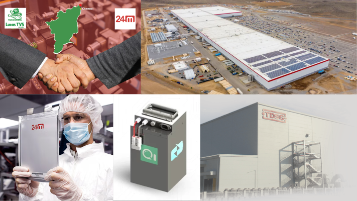
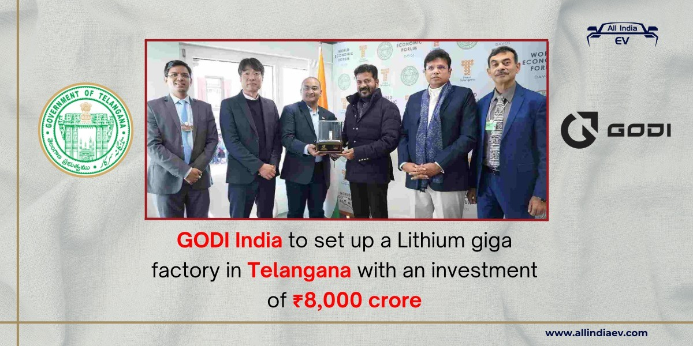
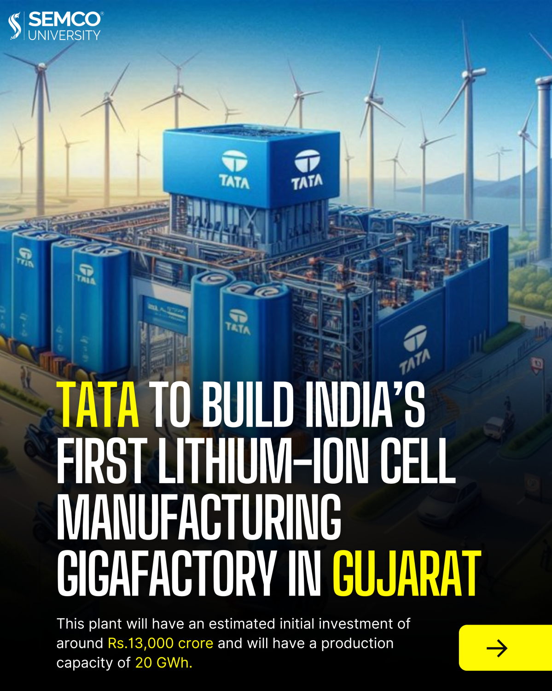
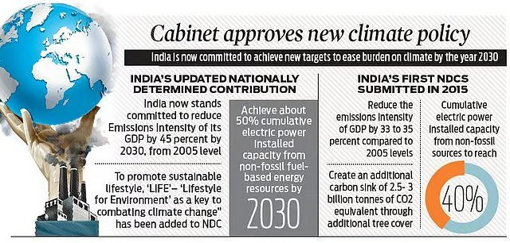
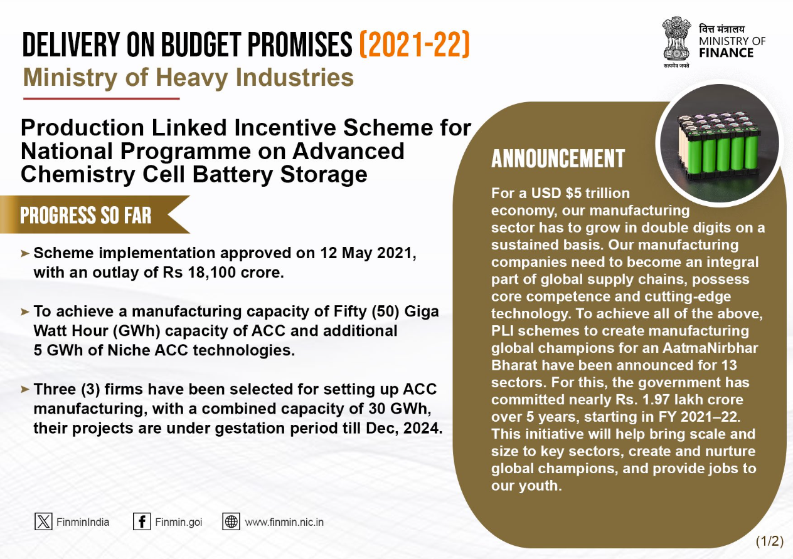
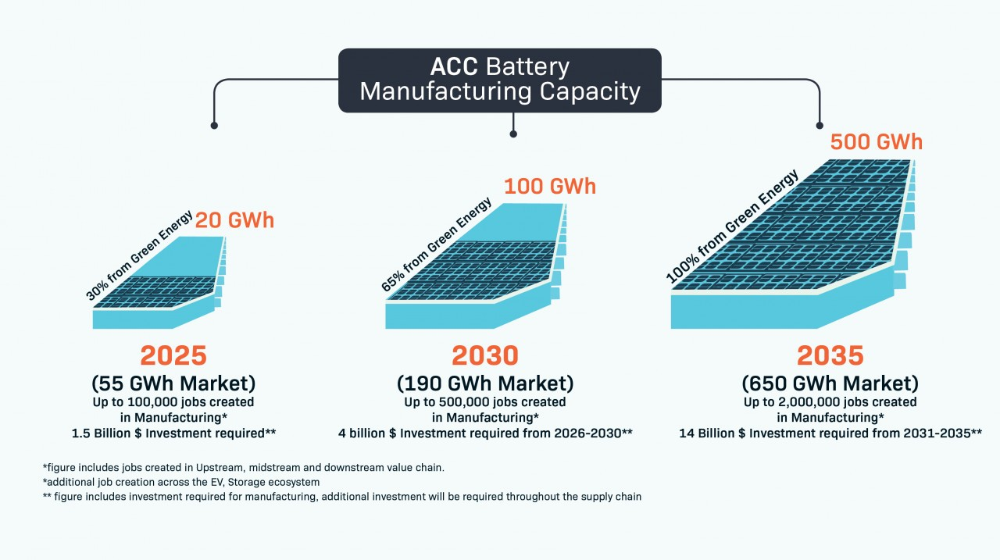
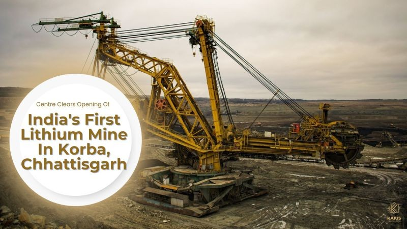
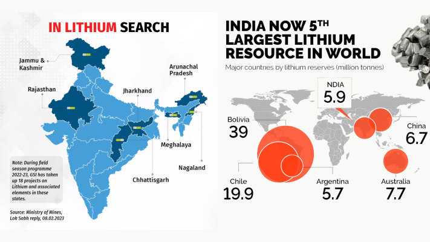
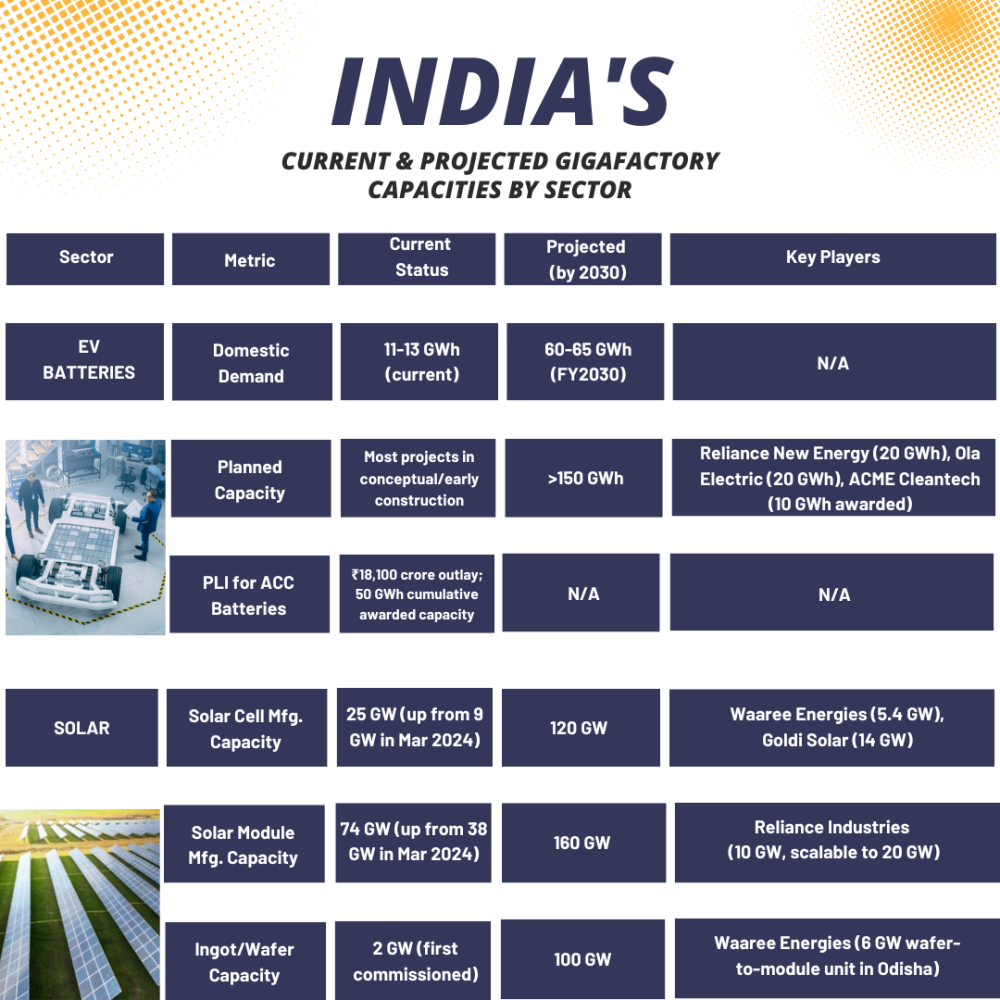

India is positioning itself to become a significant player in the global battery manufacturing landscape with ambitious plans for Gigafactories that could transform it into a hub serving not just domestic needs but the broader Global South. The country's battery demand is projected to grow 19-fold, from 13 GWh in 2024 to a remarkable 244 GWh by 2035, creating an unprecedented opportunity for manufacturing expansion.
With government support through targeted incentive schemes, emerging lithium mining operations, and multiple private sector investments, India is laying the groundwork for a battery manufacturing ecosystem that could support energy transitions across developing nations. This newsletter explores India's current trajectory, challenges, and potential to become a central Gigafactory hub serving emerging economies in Asia, Africa, and Latin America.
India's Emerging Battery Manufacturing Landscape
India's lithium-ion battery manufacturing capacity currently stands at a modest 6.7 GWh, commissioned by the end of 2023, supported by players like Lucas TVS-24M, Qmax Ion, ITP Group, and TDSG. This capacity accounts for approximately half of the anticipated battery demand in 2024, highlighting both the current limitations and tremendous growth opportunity in the sector.

Unlike global patterns where passenger electric vehicles dominate demand, India's battery requirements are notably more diverse, spread across passenger EVs, two- and three-wheelers, commercial EVs, e-buses, and stationary storage systems. The country's expected battery demand growth trajectory creates a compelling case for establishing India as a manufacturing hub not only for domestic consumption but also for export to other developing nations with similar needs and constraints. This uniquely diversified demand pattern positions India to develop manufacturing expertise across multiple battery applications relevant to Global South markets.
Major Gigafactory Initiatives Underway
Several significant Gigafactory projects are already in development across India, marking the beginning of the country's battery manufacturing revolution. Hyderabad-based GODI India is planning to construct a Gigafactory exclusively dedicated to producing lithium-ion cells for electric vehicles, demonstrating corporate commitment to large-scale battery production and increasing EV penetration in India.

In a noteworthy collaboration, Suzuki Motor Corporation and Toyota Motor Corporation are establishing a lithium-ion battery manufacturing plant in Gujarat under their joint venture, Suzuki-Toyota Kirloskar Motor, bringing global automotive expertise to India's battery manufacturing landscape. Exide Industries Limited , a leading battery manufacturer in India, has revealed plans to set up one of the first lithium-ion battery Gigafactories in Tamil Nadu, leveraging its extensive experience in the energy storage sector to address the growing demand for EV batteries.

The Tata Group has made a significant commitment by signing a deal with the Gujarat state government to set up a large-scale Gigafactory for manufacturing lithium-ion cells, with an estimated initial investment of approximately 130 billion rupees ($1.6 billion). Perhaps most ambitiously, Ola Electric has begun construction of what it claims will be India's biggest cell Gigafactory, positioning it among the world's largest such facilities. These multiple initiatives across different states reflect a nationwide push to establish India as a battery manufacturing powerhouse, creating the scale and diversity needed to serve both domestic and export markets throughout the Global South.
Government Policy Support for Gigafactory Development
The Indian government has adopted a proactive stance in promoting battery manufacturing through comprehensive policy frameworks and financial incentives. An ambitious plan to establish 12 Giga Factories by 2030 has been formulated to serve the dual purpose of manufacturing lithium-ion batteries for electric vehicles and generating renewable energy, reflecting India's commitment to clean energy transition.
This initiative aligns with India's climate goals announced at COP-28, including reducing emissions intensity by 45%, increasing the share of non-fossil fuels to 50% by 2030, and achieving net zero by 2070. The government has also launched the Global Green Credit Initiative. , which incentivizes voluntary environmental actions by rewarding ecosystem restoration efforts, creating a supportive climate for sustainability-focused industries including battery manufacturing.

Production Linked Incentive Scheme
Central to India's battery manufacturing push is the Production Linked Incentive (PLI) scheme for Advanced Chemistry Cell (ACC) Battery Storage, approved in May 2021 with a substantial budgetary outlay of 18,100 crore rupees. This national program aims to enhance India's manufacturing capabilities for Advanced Chemistry Cells by promoting the establishment of Giga-scale ACC and battery manufacturing facilities with emphasis on maximum domestic value addition.
The scheme requires beneficiary firms to achieve domestic value addition of at least 25% initially, raising it to 60% within five years, while making mandatory investments of 225 crore rupees per GWh for committed capacity within two years. Three beneficiary firms have already been allocated a total capacity of 30 GWh, with an additional 20 GWh now available for fresh allocation, demonstrating the government's commitment to rapid expansion of domestic manufacturing capacity.

The PLI scheme follows a structured timeline, with a two-year gestation period from January 2023 to December 2024, followed by a five-year performance period from January 2025 to December 2029. Under the National Programme on ACC Battery Storage, the scheme envisages setting up a cumulative ACC manufacturing capacity of 50 GWh, plus an additional 5 GWh for niche ACC technologies, creating a robust foundation for India's ambitions to become a major battery manufacturing hub. This comprehensive government support addresses both financial and policy barriers to establishing large-scale manufacturing, potentially creating competitive advantages for India in serving Global South markets.

India's Lithium Resources: The Critical Raw Material
While manufacturing capacity is essential, access to raw materials—particularly lithium—is crucial for sustainable Gigafactory development. In a significant development, India will soon commence operations at its first lithium mines in the Katghora area of Korba district, Chhattisgarh, approximately 180 km from Raipur.
A composite license has been awarded to Kolkata-based Maiki South Mining Pvt Ltd for survey, testing, and mining of India's first lithium and rare earth elements block, which was auctioned by the Centre in June 2023 and secured with the highest bid premium of 76.05%. The Geological Survey of India (GSI) has confirmed significant lithium reserves in this area, with lithium content ranging from 10 ppm to 2,000 ppm (parts per million) across approximately 250 hectares, along with the presence of Rare Earth Elements.

Domestic and Global Lithium Supply Dynamics
India's domestic lithium exploration represents an important step toward supply chain security, though global partnerships remain essential in the near term. In February 2023, India reported finding a massive lithium deposit in the Reasi area of Jammu and Kashmir, but subsequent assessment indicated that the resource, grade, and recovery assumptions were not fully supported by available data. This highlights the challenges in developing domestic lithium resources and the continued importance of international supply chains. Globally, Chile leads in lithium reserves with 9.3 million metric tonnes of brine-type lithium and ranks second in production with 56,000 tonnes, while Australia is the world's largest producer of lithium primarily extracted from hard-rock spodumene deposits.
Understanding these global lithium supply dynamics is crucial as India positions itself in the battery manufacturing landscape. The country must develop strategies to secure lithium supply through both domestic mining and strategic international partnerships, particularly with lithium-rich nations in Latin America and Australia. Developing these supply networks will be essential for India to achieve cost-competitive battery manufacturing at scale to serve both domestic needs and export markets in the Global South, where price sensitivity is often a critical factor in technology adoption.

Challenges and The Path Forward
Despite promising developments, India faces significant challenges in realizing its ambition to become a Gigafactory hub for the Global South. The current domestic manufacturing capacity of 6.7 GWh falls far short of projected demand of 244 GWh by 2035, indicating the massive scale-up required. Achieving this expansion will require overcoming technical challenges in manufacturing processes, building human resource capabilities, securing consistent raw material supplies, and ensuring competitive cost structures. The requirement within the PLI scheme to increase domestic value addition from 25% to 60% within five years presents both a challenge and an opportunity for developing a robust domestic supply chain.
India's Current & Projected Gigafactory Capacities by Sector

Strategic Imperatives for Success
For India to successfully position itself as a Gigafactory hub serving the Global South, several strategic imperatives emerge.
First, accelerating the development of domestic lithium resources, including the newly licensed Katghora mines, will be crucial for reducing dependency on imports and managing supply chain vulnerabilities.
Second, fostering innovation in battery chemistry and manufacturing processes could help address specific requirements of Global South markets, such as heat tolerance, durability, and cost-effectiveness.
Third, developing specialized expertise in battery applications beyond passenger EVs—particularly in two- and three-wheelers, commercial vehicles, and stationary storage—could create differentiated value propositions for export markets.
Conclusion
India stands at a pivotal moment in its journey to become a significant player in global battery manufacturing. The convergence of government policy support, private sector investments, emerging domestic lithium resources, and rapidly growing demand creates a conducive environment for establishing India as a Gigafactory hub serving both domestic and Global South markets.